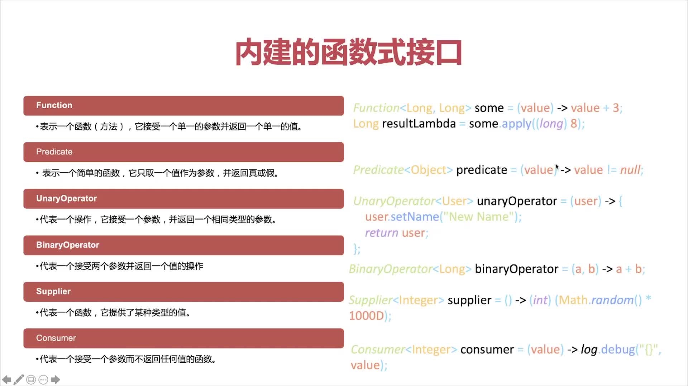

java8提供了一批内置的函数式接口

Java8常用的内置函数式接口（一）
简介
- JDK 1.8 API中包含了很多内置的函数式接口。有些是在以前版本的Java中大家耳熟能详的，例如
Comparator接口，或者Runnable接口。对这些现成的接口进行实现，可以通过@FunctionalInterface标注来启用Lambda功能支持。 - 此外，Java 8 API 还提供了很多新的函数式接口，来降低程序员的工作负担。
- 比如我们今天要了解到的四大常用的内置函数式接口：下表
| 序号 | 接口名 | 接口类型 |
|---|---|---|
| 1 | Predicate | 断言型接口 |
| 2 | Consumer | 消费型接口 |
| 3 | Supplier | 供给型接口 |
| 4 | Function<T, R> | 函数式接口 |
-
JDK 1.8之前已有的函数式接口
java.lang.Runnable
java.util.concurrent.Callable
java.security.PrivilegedAction
java.util.Comparator
java.io.FileFilter
java.nio.file.PathMatcher
java.lang.reflect.InvocationHandler
java.beans.PropertyChangeListener
java.awt.event.ActionListener
javax.swing.event.ChangeListener
Predicate 断言型接口
Predicate是一个断言式的函数式接口，返回的是一个boolean值，用于进行判断行为与参数是否相符。Java8Stream中的filter使用的就是此函数式接口。
Predicate是一个布尔类型的函数，该函数只有一个输入参数。Predicate接口包含了多种默认方法，用于处理复杂的逻辑动词（and, or，negate）
Predicate常用方法
1. test()方法
test源码：
/**
* Evaluates this predicate on the given argument.
*
* @param t the input argument
* @return {@code true} if the input argument matches the predicate,
* otherwise {@code false}
*/
boolean test(T t);// 用来判断传过来的参数是否符合规则
test方法的作用是:
1 . 评估参数里面的表达式(说白了就是验证传进来的参数符不符合规则)
2 . 它的返回值是一个boolean类型(这点需要注意一下)。
测试示例代码：
//传入一个字符串，test方法判断该字符串长度是否大于2
@Test
public void test1(){
Predicate<String> predicate = (s) -> s.length() > 2;
boolean foo = predicate.test("foo");// true
}
2.and()方法（默认方法）
and源码：
/**
* Returns a composed predicate that represents a short-circuiting logical
* AND of this predicate and another. When evaluating the composed
* predicate, if this predicate is {@code false}, then the {@code other}
* predicate is not evaluated.
*
* <p>Any exceptions thrown during evaluation of either predicate are relayed
* to the caller; if evaluation of this predicate throws an exception, the
* {@code other} predicate will not be evaluated.
*
* @param other a predicate that will be logically-ANDed with this
* predicate
* @return a composed predicate that represents the short-circuiting logical
* AND of this predicate and the {@code other} predicate
* @throws NullPointerException if other is null
*/
default Predicate<T> and(Predicate<? super T> other) {
Objects.requireNonNull(other);
return (t) -> test(t) && other.test(t);
//通过源码我们可以看到，return最总返回的是并且的逻辑，必须满足两个条件,等同于我们的逻辑与&&,存在短路特性
}
- 注意：and 方法返回一个Predicate<? super T>
测试示例代码：
//通过调用下面的方法，我们将and和test方法连续使用
boolean b = testAndMethod("zhangssss",
stringOne -> stringOne.equals("zhangsan"), stringTwo -> stringTwo.length() > 5);
System.out.println("测试and方法打印结果："+b);
/**
*
* @param stringOne 待判断的字符串
* @param predicateOne 断定表达式1
* @param predicateTwo 断定表达式2
* @return 是否满足两个条件
*/
public boolean testAndMethod(String stringOne, Predicate<String> predicateOne,Predicate<String> predicateTwo) {
return predicateOne.and(predicateTwo).test(stringOne);//and 方法返回一个Predicate<? super T>
}
打印结果：
测试and方法打印结果：false
因为使用and方法同时需要满足两个条件
3.negate()方法（默认方法）
negate源码：
/**
* Returns a predicate that represents the logical negation of this
* predicate.
* @return a predicate that represents the logical negation of this
* predicate
*/
default Predicate<T> negate() {
return (t) -> !test(t);
//我们可以看到return返回的是test()方法的相反结果，等同于我们的逻辑非
}
返回值一样需要注意， 是Predicate
测试示例代码：
//测试negate()和test()
boolean f = testNageteMethod("zhangsan", stringOne -> stringOne.equals("zhangsan"));
System.out.println("测试negate方法打印结果："+f);
public boolean testNageteMethod(String stringValue, Predicate<String> predicate) {
return predicate.negate().test(stringValue);
}
打印结果：
测试negate方法打印结果：false
4.or()方法（默认方法）
or源码：
/**
* Returns a composed predicate that represents a short-circuiting logical
* OR of this predicate and another. When evaluating the composed
* predicate, if this predicate is {@code true}, then the {@code other}
* predicate is not evaluated.
*
* <p>Any exceptions thrown during evaluation of either predicate are relayed
* to the caller; if evaluation of this predicate throws an exception, the
* {@code other} predicate will not be evaluated.
*
* @param other a predicate that will be logically-ORed with this
* predicate
* @return a composed predicate that represents the short-circuiting logical
* OR of this predicate and the {@code other} predicate
* @throws NullPointerException if other is null
*/
default Predicate<T> or(Predicate<? super T> other) {
Objects.requireNonNull(other);
return (t) -> test(t) || other.test(t);
//通过return我们可以看出返回的是多者选其一即可， 等同于我们的逻辑或
}
返回值一样需要注意，Predicate
测试示例代码：
//测试or方法
boolean a = testOrMethod("zhangsan"
, stringOne -> stringOne.equals("zhangsan111")
, stringTwo -> stringTwo.length() > 50
, stringThree -> stringThree.length() % 2 == 0);
System.out.println("测试or方法打印结果："+a);
public boolean testOrMethod(String stringOne, Predicate<String> predicateOne, Predicate<String> predicateTwo, Predicate<String> predicateThree) {
return predicateOne.or(predicateTwo).or(predicateThree).test(stringOne);
}
5. isEqual()方法(静态方法)
判断两个对象是否相等—> 使用的是Objects里面的equals()方法进行比较
isEqual源码：
/**
* Returns a predicate that tests if two arguments are equal according
* to {@link Objects#equals(Object, Object)}.
*
* @param <T> the type of arguments to the predicate
* @param targetRef the object reference with which to compare for equality,
* which may be {@code null}
* @return a predicate that tests if two arguments are equal according
* to {@link Objects#equals(Object, Object)}
*/
static <T> Predicate<T> isEqual(Object targetRef) {
return (null == targetRef)
? Objects::isNull
: object -> targetRef.equals(object);
}
解释如下: 本类由一些操作对象的静态工具方法构成，这些工具方法包括了非空检查、方法的非空参数检查、比较对象的hashCode、为对象返回一个字符串表示、比较两个对象,说的很明显了，比较的两个对象的HashCode值
通俗一点解释: 先判断对象是否为NULL—> 这个由Objects里面的isNull进行判断,如果，不为Null的话,那么接下来用java.lang.object里面的equals()方法进行比较.
测试示例代码：
//测试isEqual()方法
System.out.println(testMethodIsEquals("zhangsan","zhangsan"));
System.out.println("~~~ ~~~ ~~~ ~~~");
System.out.println(testMethodIsEquals("zhangsan","lisi"));
System.out.println("~~~ ~~~ ~~~ ~~~");
System.out.println(testMethodIsEquals(null,"zhangsan")); /* 我们来Debug一下这个程序*/
public boolean testMethodIsEquals(String strValue, String strValue2) {
return Predicate.isEqual(strValue).test(strValue2);
}
Consumer 消费型接口
Consumer的作用顾名思义,是给定义一个参数,对其进行(消费)处理,处理的方式可以是任意操作.
接口源码：
@FunctionalInterface
public interface Consumer<T> {
void accept(T t);
default Consumer<T> andThen(Consumer<? super T> after) {
Objects.requireNonNull(after);
return (T t) -> { accept(t); after.accept(t); };
}
}
Consumer常用方法
1.accept()方法
accept源码：
/**
* Performs this operation on the given argument.
*
* @param t the input argument
*/
void accept(T t);
accept(T t),接受一个参数，没有返回值
测试示例代码：
List<Integer> list = Lists.newArrayList(1, 2, 3, 4, 5, 6, 7, 8, 9);
// 通过lambda表达式构造出Consumer对象
Consumer listener = i -> System.out.println(i);
list.forEach(listener);
上面是通过lambda表达式构造出Consumer对象，将list中每一个元素，传递给consumer,执行打印的操作，我再把这个例子做一个变化
// 通过lambda表达式构造出Consumer对象
list.forEach(i -> System.out.println(i * 2));
这里打印的元素是乘2后的结果，这就说明了通过lambda表达式，我们传递的是行为，accept(T t)方法只负责接收一个参数，至于要做什么，是我们再调用的时候，把行为传递过去。
另外还可以使用方法引用的方式来调用Consumer的accept方法。
// 通过方法引用的方式构造出Consumer对象
list.forEach(System.out::println);
这里也可以实现遍历每一个元素并打印出来，这是通过方法引用的方式来构造出的Consumer对象。"::"这里两个连续的冒号，是jdk8支持的语法,可以自动定位到具体的函数式接口，这里就可以自动定位到Consumer。
2. andThen()方法
andThen源码：
/**
* Returns a composed {@code Consumer} that performs, in sequence, this
* operation followed by the {@code after} operation. If performing either
* operation throws an exception, it is relayed to the caller of the
* composed operation. If performing this operation throws an exception,
* the {@code after} operation will not be performed.
*
* @param after the operation to perform after this operation
* @return a composed {@code Consumer} that performs in sequence this
* operation followed by the {@code after} operation
* @throws NullPointerException if {@code after} is null
*/
default Consumer<T> andThen(Consumer<? super T> after) {
Objects.requireNonNull(after);
return (T t) -> { accept(t); after.accept(t); };
}
该方法默认实现，它接收一个Consumer对象，同时会返回一个Consumer对象,返回的Consumer对象还可以继续调用andThen方法，这样该方法就实现了将执行操作给串行化。举个例子：
print(list, item -> System.out.print(" consumer1-->:" + item * 2), item -> System.out.println(" consumer2-->:" + item * 3));
/*
andThen方法， 将参数传递给调用者执行accept方法，然后再传给第二个consumer执行accept方法。
*/
public void print(List<Integer> list, IntConsumer con1, IntConsumer con2) {
list.forEach(item -> con1.andThen(con2).accept(item));
}
该示例构造了两个Consumer对象,通过consumer的andThen方法，将两个操作给串行起来，对于list中每个元素，都会先执行con1的appect方法，再执行con2的accept方法。
打印结果：
consumer1-->:2 consumer2-->:3
consumer1-->:4 consumer2-->:6
consumer1-->:6 consumer2-->:9
consumer1-->:8 consumer2-->:12
consumer1-->:10 consumer2-->:15
consumer1-->:12 consumer2-->:18
consumer1-->:14 consumer2-->:21
consumer1-->:16 consumer2-->:24
consumer1-->:18 consumer2-->:27
与Consumer相关的接口
BiConsumer<T, U>
- 处理一个两个参数
DoubleConsumer
- 处理一个double类型的参数
IntConsumer
- 处理一个int类型的参数
LongConsumer
- 处理一个long类型的参数
ObjIntConsumer
- 处理两个参数,且第二个参数必须为int类型
ObjLongConsumer
- 处理两个参数,且第二个参数必须为long类型
Supplier供给型接口
Supplier接口是对象实例的提供者，定义了一个名叫get的抽象方法，它没有任何入参，并返回一个泛型T对象，具体源码如下：
@FunctionalInterface
public interface Supplier<T> {
/**
* Gets a result.
*
* @return a result
*/
T get();
}
常用方法
1. get()方法
下面我们使用声明一个Supplier的实例：
/**
*supplier供给型函数接口测试
*/
@Test
public void testSupplier() {
Supplier<Person> supplier = Person::new;
Person person = supplier.get();
System.out.println("通过Supplier接口创建Person空对象："+person);
System.out.println("---------------------------");
Supplier<Person> supplier1 =() -> new Person("Evonne", "Shari", "JAVA", "female", 40, 1800);
Person person1 = supplier1.get();
System.out.println("通过Supplier接口创建Person非空对象："+person1);
}
打印结果：
通过Supplier接口创建Person空对象：Person(firstName=null, lastName=null, job=null, gender=null, salary=0, age=0)
---------------------------
通过Supplier接口创建Person非空对象：Person(firstName=Evonne, lastName=Shari, job=JAVA, gender=female, salary=40, age=1800)
特别需要注意的是，本例中每一次调用get方法都会创建新的对象。
Function<T,R>函数式接口
Function接口可以创建更加复杂的Function接口实例。有两个参数：T入参，R返参
常用方法
1. apply()方法
Function 就是一个函数，其作用类似于数学中函数的定义，所以Function中没有具体的操作，具体的操作需要我们去为它指定，因此apply具体返回的结果取决于传入的lambda表达式。
apply源码：
/**
* Applies this function to the given argument.
*
* @param t the function argument
* @return the function result
*/
R apply(T t);
测试示例代码：
public void test(){
Function<Integer,Integer> test=i->i+1;
test.apply(5);
}
/**打印结果 print:6*/
解析：上面的示例用lambda表达式定义了一个行为使得i自增1，我们使用参数5(相当于传入参数5)执行apply，最后打印结果6。这跟我们以前看待Java的眼光已经不同了，在函数式编程之前我们定义一组操作首先想到的是定义一个方法，然后指定传入参数，返回我们需要的结果。函数式编程的思想是先不去考虑具体的行为，而是先去考虑参数，具体的方法我们可以后续再设置。
再举个例子：
public void test(){
Function<Integer,Integer> test1=i->i+1;
Function<Integer,Integer> test2=i->i*i;
System.out.println(calculate(test1,5));
System.out.println(calculate(test2,5));
}
public static Integer calculate(Function<Integer,Integer> test,Integer number){
return test.apply(number);
}
/** 打印结果print:6*/
/**打印结果 print:25*/
通过传入不同的Function，实现了在同一个方法中实现不同的操作。在实际开发中这样可以大大减少很多重复的代码，比如我在实际项目中有个新增用户的功能，但是用户分为VIP和普通用户，且有两种不同的新增逻辑。那么此时我们就可以先写两种不同的逻辑。除此之外，这样还让逻辑与数据分离开来，我们可以实现逻辑的复用。
当然实际开发中的逻辑可能很复杂，比如两个方法F1,F2都需要两个个逻辑AB，但是F1需要A->B，F2方法需要B->A。这样的我们用刚才的方法也可以实现，源码如下：
public void test(){
Function<Integer,Integer> A=i->i+1;
Function<Integer,Integer> B=i->i*i;
System.out.println("F1:"+B.apply(A.apply(5)));
System.out.println("F2:"+A.apply(B.apply(5)));
}
/** F1:36 */
/** F2:26 */
2 . compose()和andThen()方法
接着上面的例子，假如我们F1,F2需要四个逻辑ABCD，那我们还这样写就会变得很麻烦了。
compose和andThen可以解决我们的问题。先看compose的源码：
default <V> Function<V, R> compose(Function<? super V, ? extends T> before) {
Objects.requireNonNull(before);
return (V v) -> apply(before.apply(v));//before，先执行传入的V，在执行原有的
}
compose接收一个Function参数，返回时先用传入的逻辑执行apply，然后使用当前Function的apply。
default <V> Function<T, V> andThen(Function<? super R, ? extends V> after) {
Objects.requireNonNull(after);
return (T t) -> after.apply(apply(t));//after,先执行原有的，再执行传入的参数
}
andThen跟compose正相反，先执行当前的逻辑，再执行传入的逻辑
换个说法：
compose等价于B.apply(A.apply(5))，而andThen等价于A.apply(B.apply(5))。
public void test(){
Function<Integer,Integer> A=i->i+1;
Function<Integer,Integer> B=i->i*i;
System.out.println("F1:"+B.apply(A.apply(5)));
System.out.println("F1:"+B.compose(A).apply(5));
System.out.println("F2:"+A.apply(B.apply(5)));
System.out.println("F2:"+B.andThen(A).apply(5));
}
/** F1:36 */
/** F1:36 */
/** F2:26 */
/** F2:26 */
我们可以看到上述两个方法的返回值都是一个Function，这样我们还可以使用建造者模式（待研究）的操作来使用。
Integer apply1 = B1.compose(A1).compose(A1).andThen(A1).apply(5);//待研究
Java8常用的内置函数式接口（一）Predicate、Consumer、Supplier、Function - Mr*宇晨 - 博客园